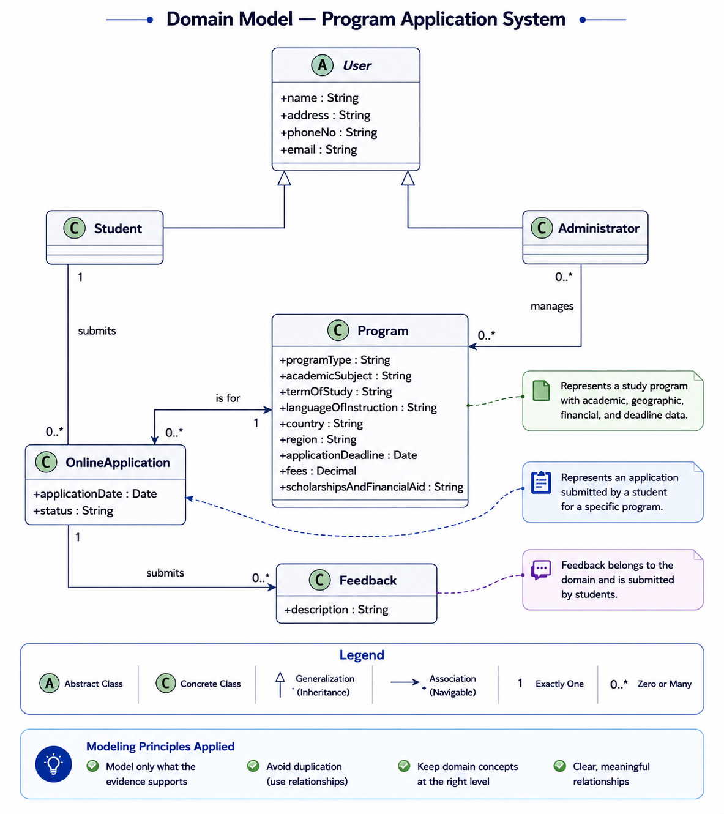

Worked Example: Online Program Application Domain
Read a domain story, extract the concepts, classify their properties, then connect them using the relationships taught in the lecture.
Apply class discovery, attributes, associations, roles, and multiplicity to the lecture’s sample program/application domain.
What exists in this world?
Users search for programs. Staff users and administrators perform management tasks.
Programs have properties such as type, academic subject, term, language, country, deadlines, fees, and financial-aid information.
Students submit online applications for programs.
Students can submit feedback associated with the domain.
Extract concepts, not every noun
Domain participant with identity and account-related properties.
A study program with its own properties.
An application submitted by a student.
A domain object with description and relationships.
A specialized/management role in the sample model.
Examples of attributes
| Class | Representative attributes from the lecture model |
|---|---|
| User | Name, Address, Phone No, e-mail ID, User Name, Password, Privilege |
| Program | Program Type, Academic Subject, Term of Study, Language of Instruction, Country, Region, Application Deadline, Fees, Scholarships & Financial aid |
| Online Application | Program Name, Student Name, Student ID, Address, Course |
| Feedback | Description |
Relationships turn a list into a model
Student — submits — Application
Use association and multiplicity to express participation.
Application — for — Program
The application is linked to the program it targets.
Administrator — manages — Program
Management is modeled as a meaningful association.
Student — submits — Feedback
Another application-specific relationship.
Compare your reasoning with the completed UML model
The image below is the completed solution supplied for this worked example. Read it after working through the earlier steps: identify the classes first, inspect their attributes, then trace each relationship and its multiplicity.

Do not memorize the sample diagram as a picture. Reconstruct it from concepts → attributes → relationships → multiplicities, then use the completed diagram above to check your reasoning.